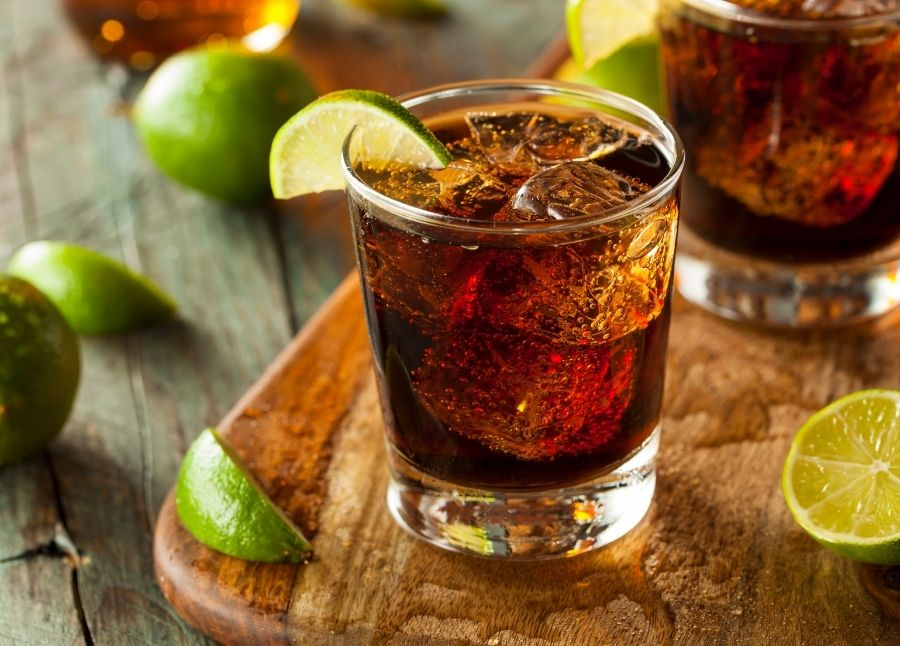

Virgin Cuba Libre

The fresh beverage popularized by Dr. Sheldon Cooper
A traditionally made Virgin Cuba Libre
Ingredients
Coke
Lime
Ice
Directions
Fill ice in a tall glass
Pour the coke
Add a slice of lime